指定颜色修改 in Photoshop

上图是我拍摄的油菜花照片，当我想要单独修改花的颜色或者修改绿色枝干的颜色时可以方便的实现吗？使用 Photoshop 可以轻松达到想要的效果。
这里用到的技术细节其实就是提取出想要修改部分，然后修改颜色。有两个方法可以进行提取：color range 和 hue。
color range
首先使用 color range 来进行选区，选择 select - color range：
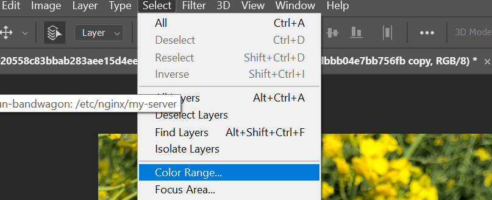
首先将 fuzziness 设为 0，关闭 localized color clutter，preview 设为 none：
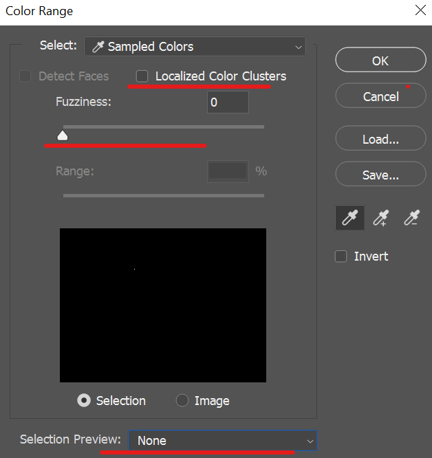
选择右侧 eyedrop，点击花朵，然后选择带加号的 eyedrop 进行区域添加：
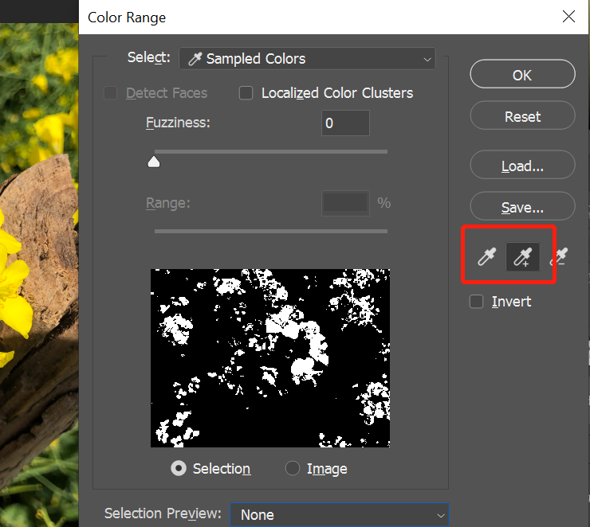
将 preview 设置为 black matte 更清晰的观察选取：
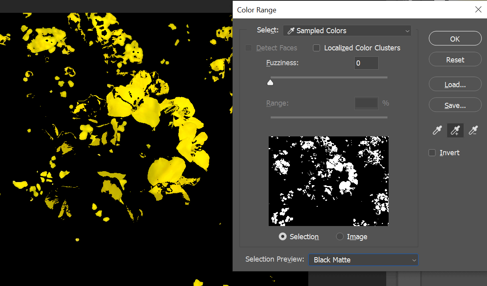
适当调整 fuzziness 使过渡平滑：
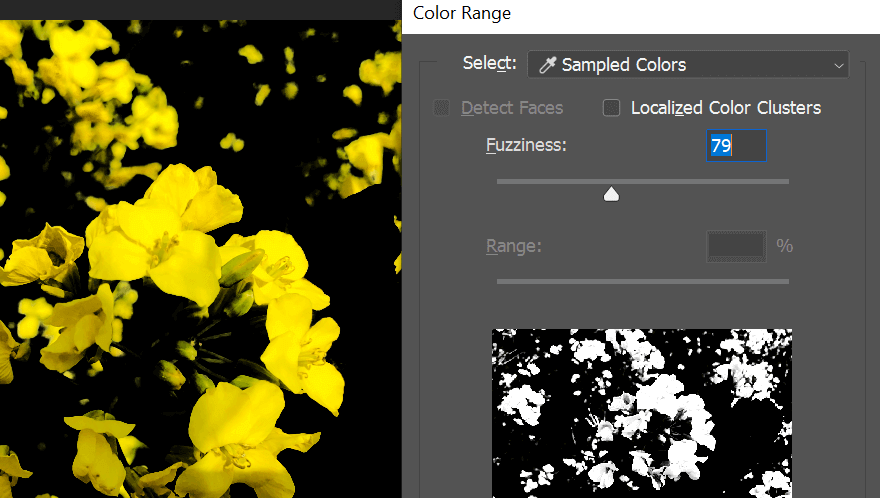
确认后就建立了选区，新建 hue 图层，会自动添加蒙版，这样修改只影响花朵部分：
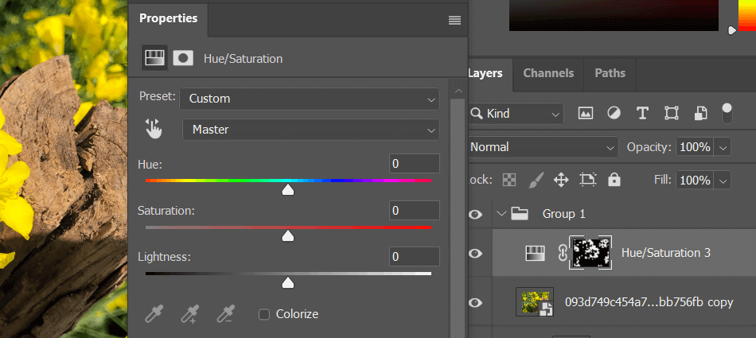
调节 hue 或 saturation 来修改颜色：
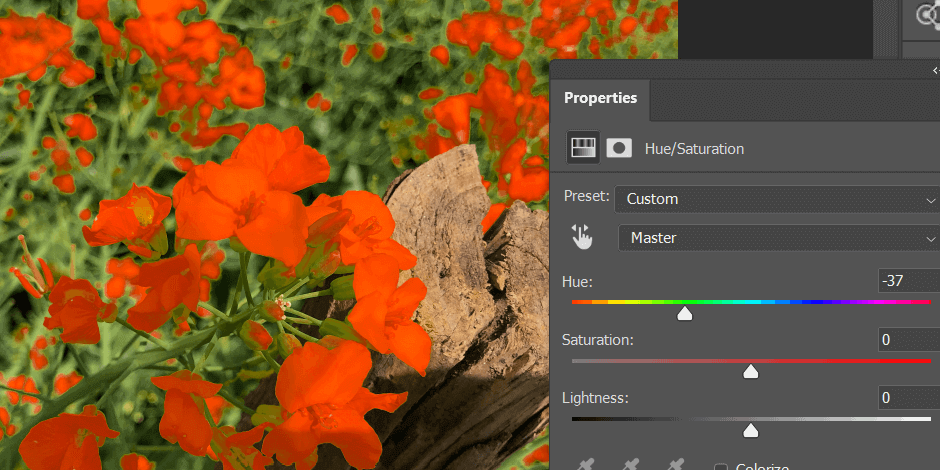
如果要修改背景色彩，可以新建 hue 图层，按住 alt 拖动蒙版到新的图层，然后 ctrl I 反转蒙版，这样就可以单独调整背景色彩了：
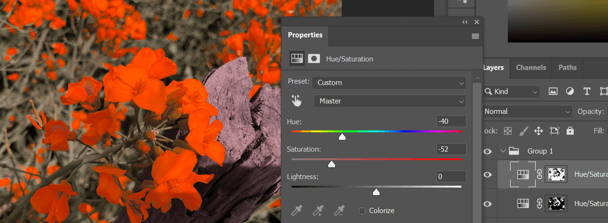
最终效果如下：
hue/saturation
也可以直接使用 hue/saturation 图层来提取颜色。新建 hue/saturation 图层，先选择任意一种颜色：
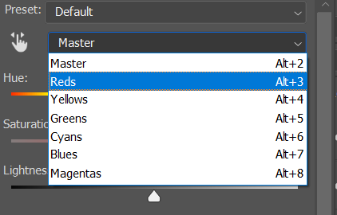
下方 eyedrop 就可以使用了，选择左侧 eyedrop 上方选择 3×3，点击花朵部分：
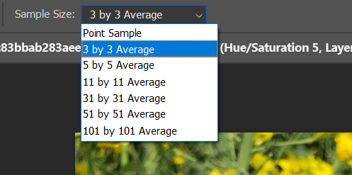
先将 hue 和 saturation 设置到最大，这样方便观察当前影响的颜色范围：
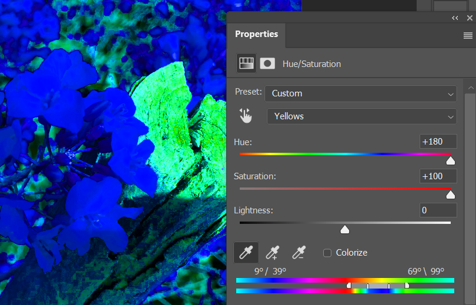
调节左右滑块使影响的颜色只包含花朵：
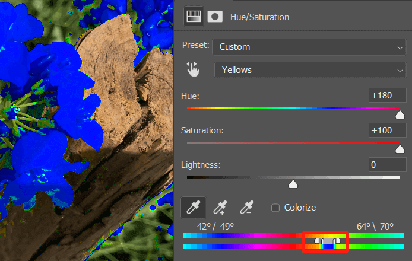
恢复 hue/saturation 值，然后调节到合适位置：
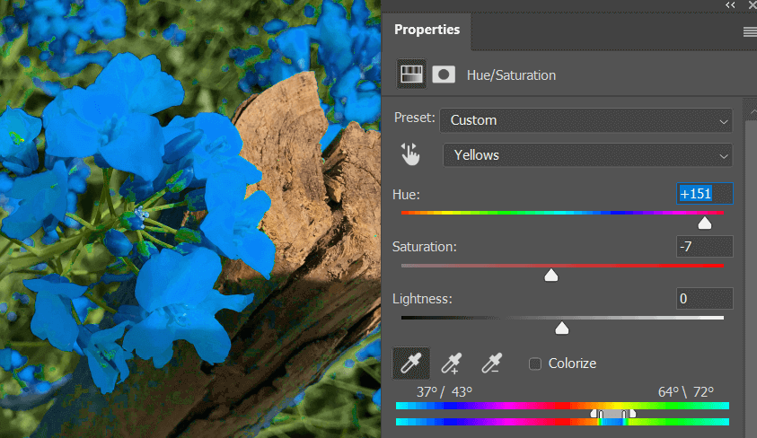
最终效果如下：
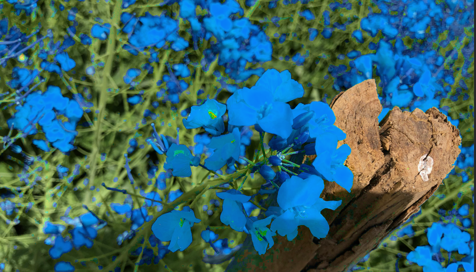
标签：无